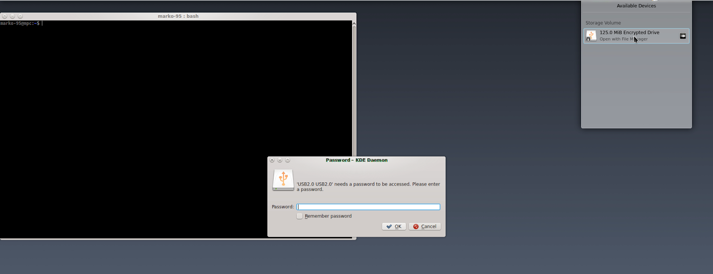

First of all, we need to install "cryptsetup" on our system.
I'm on Debian so:
# apt-get install cryptsetup
after connecting the drive, we need to get the device name assigned to it:
# fdisk -l
as you can see, in my case is "/dev/sdb".
Now, this step, will destroy all data on the drive. Make sure you have a backup before proceeding.
"Umount" your drive and then type:
# cryptsetup -y -v luksFormat your_device
and follow the instruction on screen.
Of course, several other options can be added, I'm ok with the defaults, but if you want, in the info links, you will find suggestions to add other options.
OK, the device is encrypted. What's missing? A file system!
# cryptsetup luksOpen your_device name_you_want
to unlock the drive. You will be asked for the password of course.
# mkfs -t ext4 /dev/mapper/name_you_used_before
and you will get a result similar to this:
Now we can actually mount the drive. Here a picture, I'll explain in the next section.

Many Desktop Environments (at least KDE) are capable to recognize a LUKS drive when it is connected and do the dirty work for you.
But, since I'm a fan of command line (mainly because is a "universal" interface among the distributions), I'm going to show that way.
Zero step: connect the drive and check the device name
First step: unlock the drive
# cryptsetup luksOpen your_device name_you_want
Second step: mount the drive on a mount point
# mount /dev/mapper/name_you_used_before mount_point_you_like
(with file systems different from "ext" could be required specify the type)
Done.

The things here are easy:
# umount mount_point_used_before # cryptsetup luksClose name_used_before
Done.
This isn't a professional tutorial, no argument has been deepened, it's just a quick way to set up an encrypted pen drive (or external Hard Disk, SD card, etc...) with a password that works well on Linux.
I encourage you to explore these topics starting from the links provided at the beginning of the post, to get a better understanding of what we have done today. Bye.